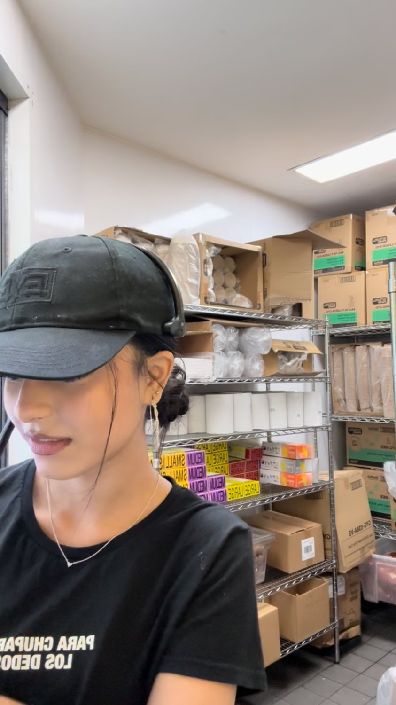
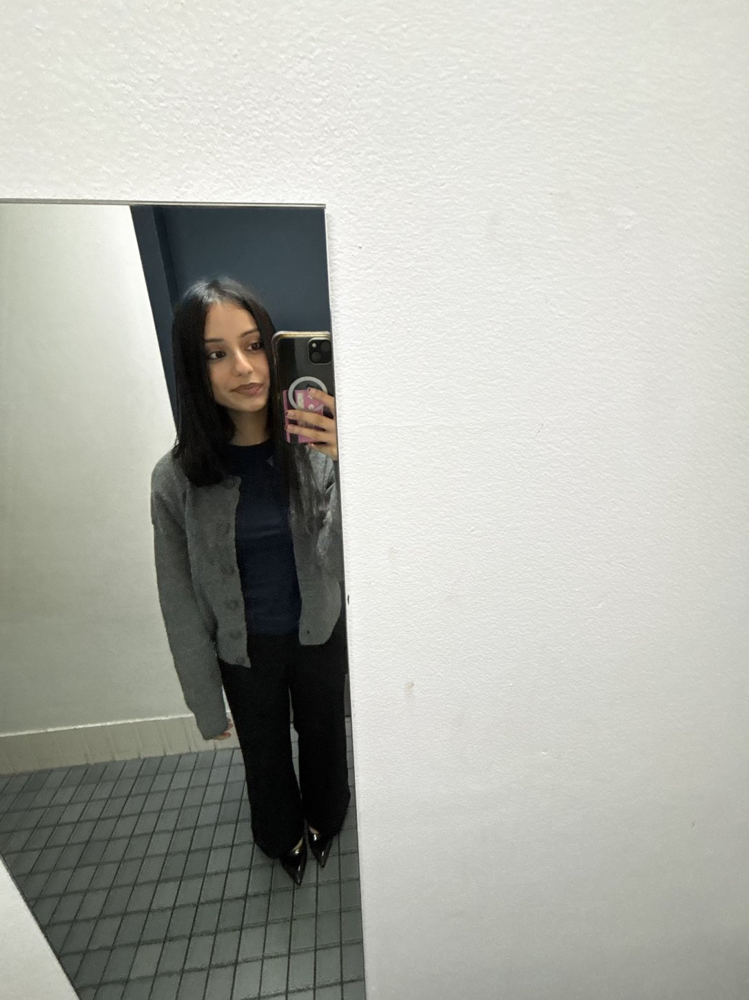
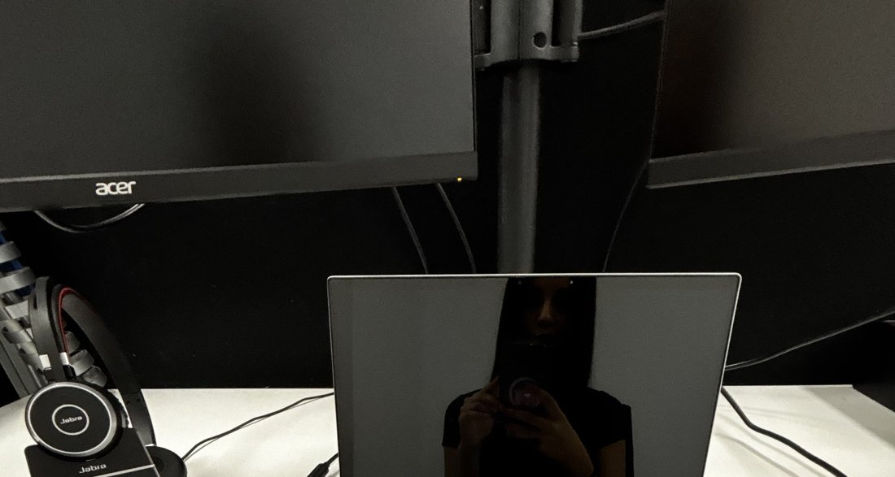

Three places.
Different lessons.
Learning Education / Kumon Tutoring Centre
I taught children, recorded their progress, maintained learning records and updated my supervisor about when individual students were ready to move levels or needed additional support. I also spoke with parents and adapted my approach to different learning needs.
Starting work while still at school, and learning how to discuss a student's difficulties with parents when I was a student myself.
Working with students who had different learning needs challenged how I viewed my own academic progress. I realised that improvement was not always immediate or consistent, and that struggling with something did not necessarily reflect a lack of ability. I began applying this perspective to my HSC studies, becoming more deliberate about identifying my weaknesses, adjusting how I studied and recognising that meaningful progress required patience, consistency and a willingness to change my approach.

L Hospitality / Guzman Y Gomez
As a crew member, I managed orders, payments, telephone enquiries, drive-through service and customer concerns. During busy shifts, I helped allocate tasks, communicated updates and kept track of competing priorities.
Finding work after graduating high-school, becoming comfortable in a customer-facing role in a fast-paced environment and keeping pace when priorities changed without warning.
Working in a fast-paced environment taught me to assess competing demands, prioritise under pressure and adapt when circumstances changed. I also came to understand that independence does not mean managing everything alone. Communicating clearly, recognising when to seek support and sharing responsibilities were essential to maintaining both efficiency and service quality.
Legal practice/ Legal Assistant
I work in a personal injury practice. My work includes drafting letters of advice, responding to client enquiries, diarising, organising bookings, preparing files and supporting administrative workflows.
Moving into a professional legal environment while working and studying full-time. Deadlines carry a different weight when a delay may affect a client's claim and personal life.
Working in legal practice has made me more deliberate about maintaining accurate records, exercising professional judgement and keeping others informed. I have also learned to seek clarification early rather than allow uncertainty to affect others. Managing strict deadlines and competing responsibilities has strengthened my ability to remain composed under pressure, while giving me a greater appreciation for the accountability and precision that professional practice demands.


Looking back, I think the biggest change has been in how I understand responsibility. At Kumon, I focused on adapting my approach to help others progress. At GYG, I learned that being capable did not mean handling everything independently. Now, in legal practice, I am more conscious of how even small decisions can affect someone else's work or circumstances. These experiences have challenged my earlier tendency to measure competence by how much I could manage on my own. I have come to value knowing when to take initiative, when to seek guidance and, importantly, recognising that my responsibilities extend beyond the tasks assigned to me.
THAT SHIFT WAS TESTED IN MY CAPSTONE ↗